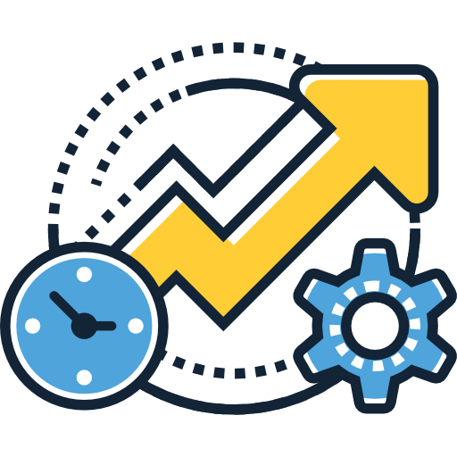
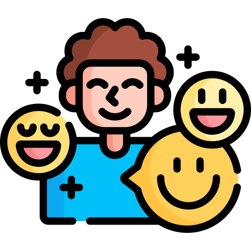
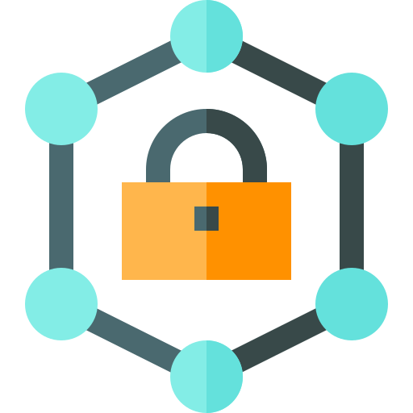
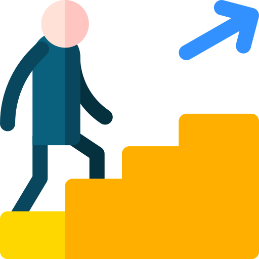
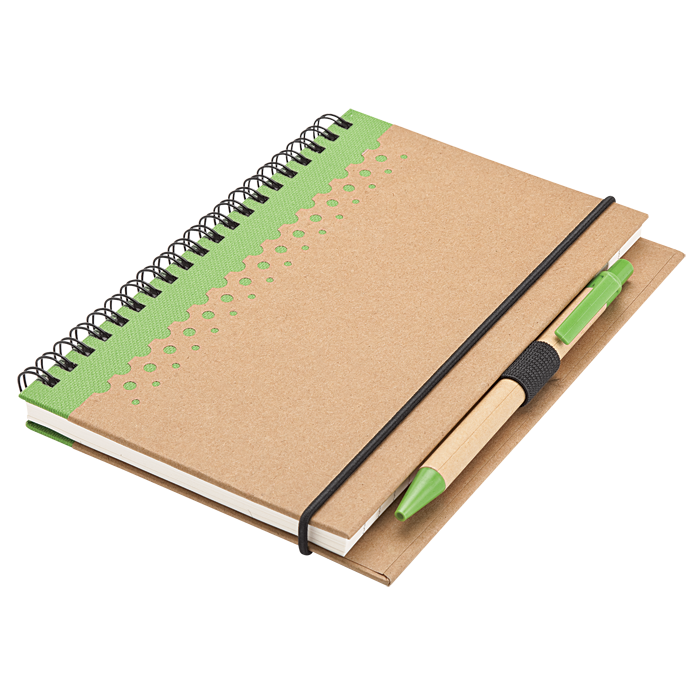

Why Choose Us?
Here’s what sets us apart and why you’ll love using our platform for journaling, productivity, and emotional balance.
Discover a new way to record, reflect, and accomplish your goals. Get ready to elevate your productivity and happiness.
Get Started
Students
Organize assignments, deadlines,
and notes for better time management. Manage personal goals,
extracurricular activities, and daily reflections.
Teachers
Track lesson plans, attendance, and
student progress efficiently. Keep track of professional goals,
meetings, and student progress.

Working Professionals
Schedule meetings,
tasks, and set reminders to boost productivity. Manage work-life
balance, journaling, and goal tracking.
Parents
Record family schedules,
appointments, and kids' school activities. Manage personal goals
and maintain self-care amidst family life.
Health Enthusiasts
Log exercise routines,
diet, and health goals. Maintain personal notes, sessions, and
reflections.
Creative Writers and Artists
Keep track of
ideas, inspirations, and projects. For journaling, mood tracking,
and setting creative goals.
Entrepreneurs
Manage business ideas, track
progress, and set deadlines to stay on top of projects. For
managing long-term goals and business development.
Travelers
Plan and organize trips,
itineraries, and bucket lists. For tracking travel goals and
journaling experiences.
Here’s what sets us apart and why you’ll love using our platform for journaling, productivity, and emotional balance.
Our platform allows you to tailor the journaling experience to suit your personal goals and lifestyle, making it more meaningful.

With task tracking, goal-setting, and reminders, stay on top of your daily responsibilities and boost productivity.

Track and visualize your mood trends over time, helping you understand emotional patterns and take proactive steps.

Your data is encrypted and kept secure, with full control over who can see your personal reflections.

Our user-friendly interface makes journaling easy for everyone, even if it’s your first time trying digital journaling.

Daily Entries
Seamlessly capture your daily thoughts,
moods, and memorable moments. This feature allows you to reflect
on your experiences and track your emotional journey over time,
helping you better understand yourself.
Multimedia Support
Add photos to your entries to
visually capture memories and make your diary more engaging.
Whether it's a picture from a memorable event or a simple daily
snapshot, multimedia entries help keep your memories vivid and
immersive.

Privacy Control
Keep your thoughts secure with privacy
settings that ensure only you can access your entries. Your
personal reflections are safeguarded, giving you the peace of mind
to freely express yourself without worry.
Reminders
Set reminders for important tasks,
deadlines, or personal events. This feature ensures you never miss
out on critical activities, helping you stay on track with your
goals.